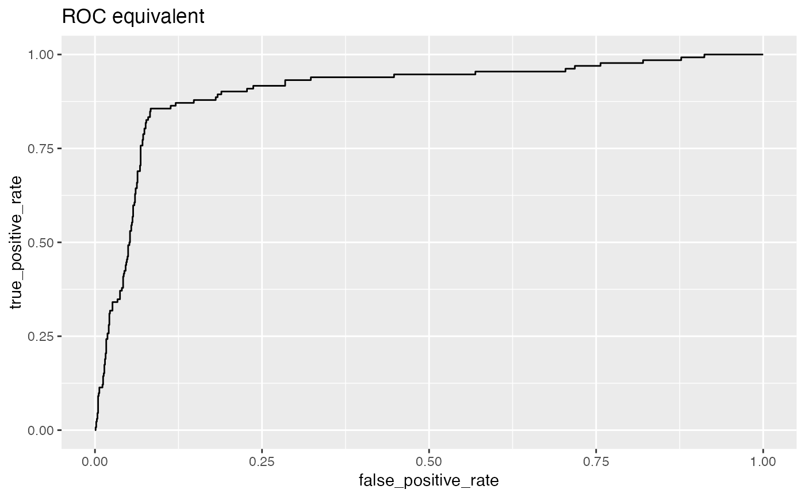
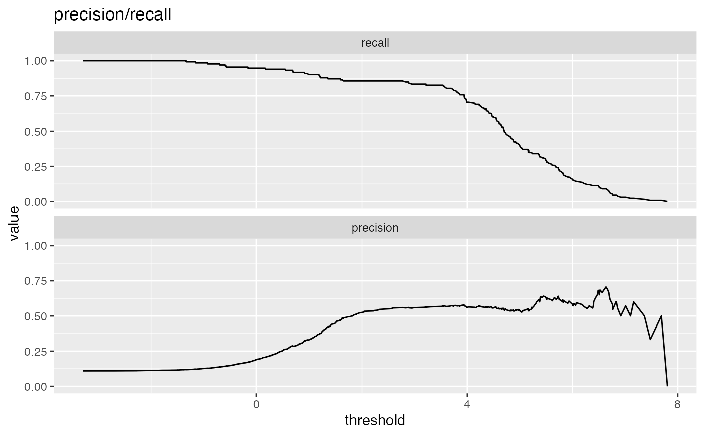
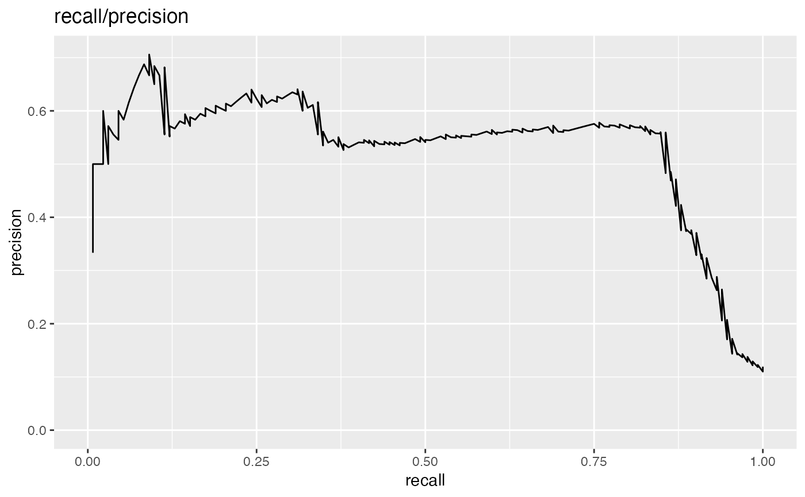
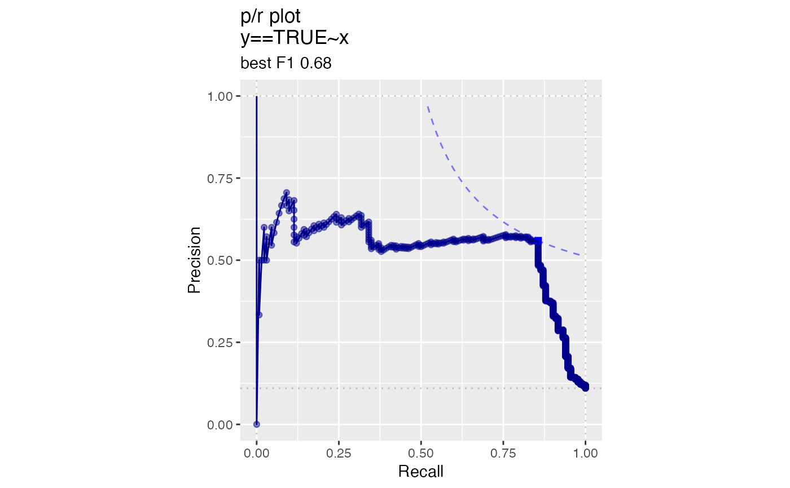

Plot the relationship between two metrics.
MetricPairPlot( frame, xvar, truthVar, title, ..., x_metric = "false_positive_rate", y_metric = "true_positive_rate", truth_target = TRUE, points_to_plot = NULL, linecolor = "black" )
Arguments
| frame | data frame to get values from |
|---|---|
| xvar | name of the independent (input or model) column in frame |
| truthVar | name of the column to be predicted |
| title | title to place on plot |
| ... | no unnamed argument, added to force named binding of later arguments. |
| x_metric | metric to be plotted. See Details for the list of allowed metrics |
| y_metric | metric to be plotted. See Details for the list of allowed metrics |
| truth_target | truth value considered to be positive. |
| points_to_plot | how many data points to use for plotting. Defaults to NULL (all data) |
| linecolor | character: name of line color |
Details
Plots two classifier metrics against each other, showing achievable combinations of performance metrics. For example, plotting true_positive_rate vs false_positive_rate recreates the ROC plot.
MetricPairPlot can plot a number of metrics. Some of the metrics are redundant,
in keeping with the customary terminology of various analysis communities.
sensitivity: fraction of true positives that were predicted to be true (also known as the true positive rate)
specificity: fraction of true negatives to all negatives (or 1 - false_positive_rate)
precision: fraction of predicted positives that are true positives
recall: same as sensitivity or true positive rate
accuracy: fraction of items correctly decided
false_positive_rate: fraction of negatives predicted to be true over all negatives
true_positive_rate: fraction of positives predicted to be true over all positives
false_negative_rate: fraction of positives predicted to be all false over all positives
true_negative_rate: fraction negatives predicted to be false over all negatives
points_to_plot specifies the approximate number of datums used to
create the plots as an absolute count; for example setting points_to_plot = 200 uses
approximately 200 points, rather than the entire data set. This can be useful when
visualizing very large data sets.
See also
Examples
# data with two different regimes of behavior d <- rbind( data.frame( x = rnorm(1000), y = sample(c(TRUE, FALSE), prob = c(0.02, 0.98), size = 1000, replace = TRUE)), data.frame( x = rnorm(200) + 5, y = sample(c(TRUE, FALSE), size = 200, replace = TRUE)) ) # Sensitivity/Specificity examples ThresholdPlot(d, 'x', 'y', title = 'Sensitivity/Specificity', metrics = c('sensitivity', 'specificity'), truth_target = TRUE)MetricPairPlot(d, 'x', 'y', x_metric = 'false_positive_rate', y_metric = 'true_positive_rate', truth_target = TRUE, title = 'ROC equivalent')# Precision/Recall examples ThresholdPlot(d, 'x', 'y', title = 'precision/recall', metrics = c('recall', 'precision'), truth_target = TRUE)#> Warning: Removed 1 row(s) containing missing values (geom_path).MetricPairPlot(d, 'x', 'y', x_metric = 'recall', y_metric = 'precision', title = 'recall/precision', truth_target = TRUE)#> Warning: Removed 1 row(s) containing missing values (geom_path).